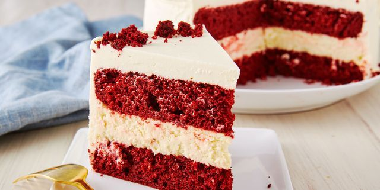

Super red velvet cake recipe

Description
Red Velvet Cake is a beloved dessert known for its vibrant red color, subtle cocoa flavor, and tangy
cream cheese frosting. Its unique taste and striking appearance have made it a favorite for various occasions.
One of the most acclaimed and widely used Red Velvet Cake recipes is from Divas Can Cook. This recipe is celebrated
for its moist and fluffy texture, rich flavor, and straightforward instructions, making it accessible for both novice
and experienced bakers.
Ingredients
- 2½ cups all-purpose flour
- 1½ cups granulated sugar
- 1 teaspoon baking soda
- 1 teaspoon baking powder
- 1 teaspoon salt
- 2 tablespoons unsweetened cocoa powder
- 1 cup vegetable oil
- 1 cup buttermilk, room temperature
- 2 large eggs, room temperature
- 2 tablespoons red food coloring
- 1 teaspoon vanilla extract
- 1 teaspoon white distilled vinegar
- ½ cup brewed coffee, cooled (optional, enhances chocolate flavor)
Steps
- Preheat Oven: Set your oven to 325°F (163°C). Grease and flour two 9-inch round cake pans and set aside.
- Mix Dry Ingredients: In a medium bowl, whisk together the flour, baking soda, baking powder, cocoa powder, and salt. Set aside.
- Combine Wet Ingredients: In a large bowl, combine the sugar and vegetable oil. Mix in the eggs, buttermilk, vanilla extract, and red food coloring until well combined.
- Incorporate Dry Ingredients: Gradually add the dry ingredients to the wet ingredients, mixing until just combined.
- Add Coffee and Vinegar: Stir in the brewed coffee and white vinegar until the batter is smooth.
- Bake: Divide the batter evenly between the prepared cake pans. Bake for 25-30 minutes, or until a toothpick inserted into the center comes out clean.
- Cool: Allow the cakes to cool in the pans for about 10 minutes, then remove them from the pans and let them cool completely on a wire rack.
- Frost: Once the cakes are completely cooled, frost with your favorite cream cheese frosting.
Back to home